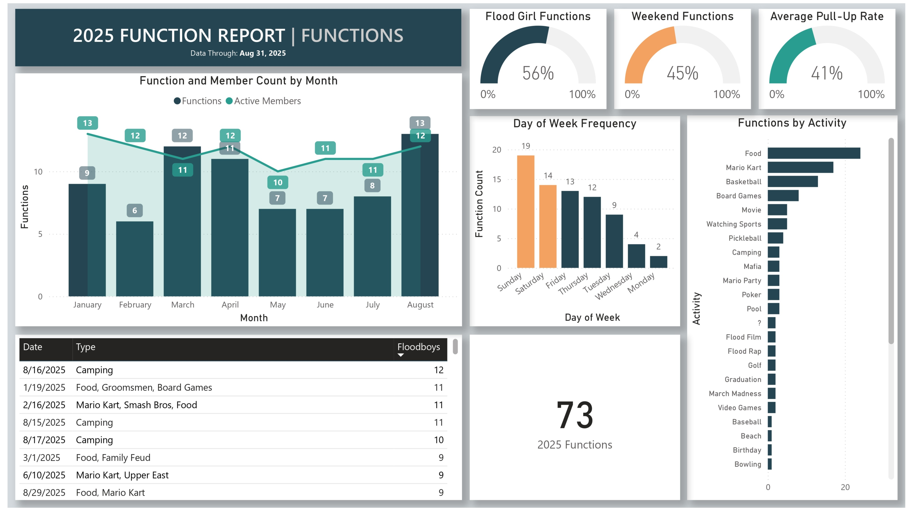
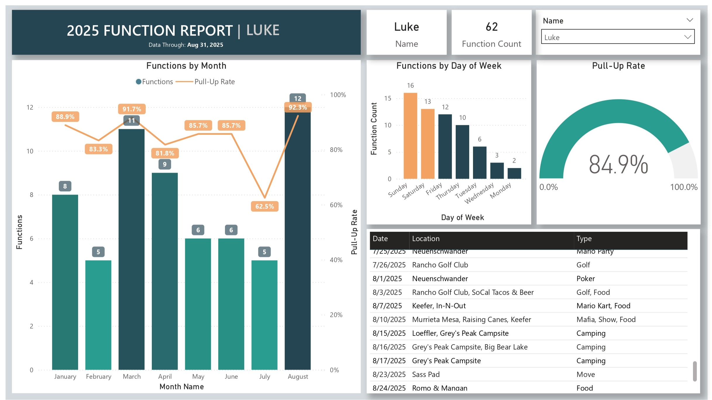
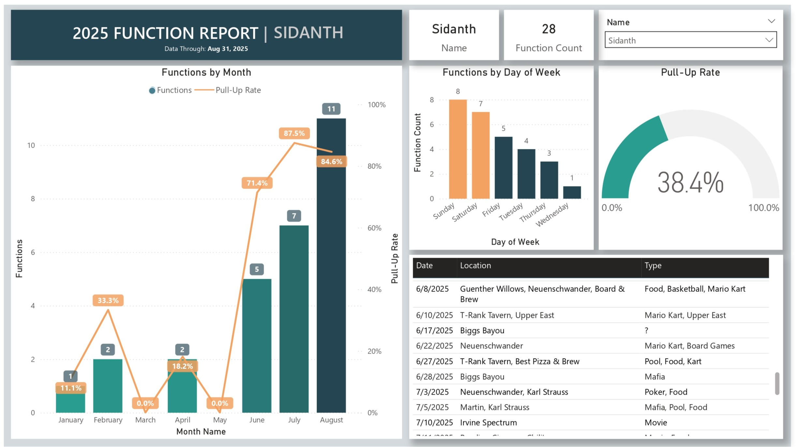

LukeLoeff 2025 Function Report
Power BI report sourced from a Excel sheet with manual records of every hangout in my friend group from Jan 1, 2025 to August 31, 2025.
General Overview
A high-level look at total hangout volume and group trends.
Location Analysis
Breakdown of the most frequent meetup spots by quantity and coordinates.

Individual Stats: Luke
Specific engagement metrics and attendance records for Luke.
Individual Stats: Sidanth
Specific engagement metrics and attendance records for Sidanth.
